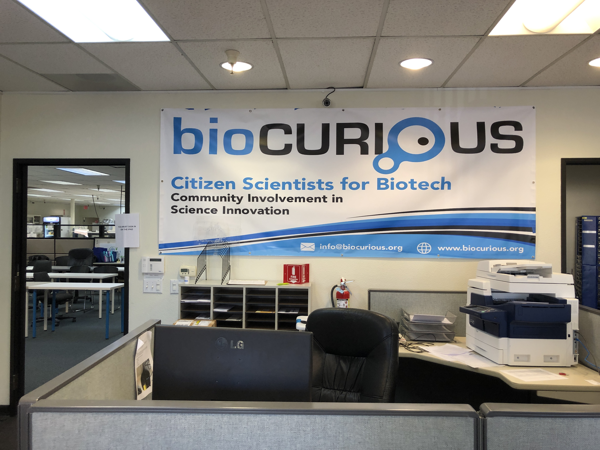
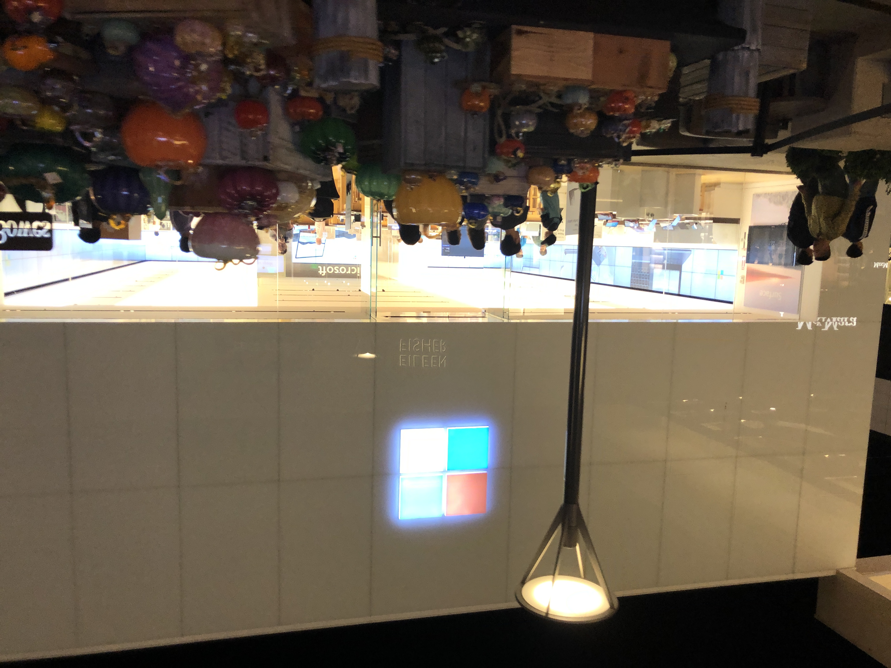

SF day.5 Fell in love with America
Posted on Fri, 25 Oct 2019 in travel
2019.10.25
Chooch AI (B)
Chooch AI (meaning choose + search) is a complete visual AI platform, with an API, a dashboard and mobile SDK. Combining computer vision training with machine learning. It offers object recognition and facial authentication, with autonomous labeling, data collection, neural network selection and more.
You can download Chooch Demo, or play in the browser here. Please check it!!
As I have built a similar model, I easily understand the mechanism and the algorithm running behind, but their model had more features and greater abilities than what I made, so I asked too much about technical points of them.
とりま今回の旅行で嬉しかったのは、VCのインターンとして訪問したAIベンチャー企業で技術的な質問したら "Are you a machine learning guy?" と言われたことと、可愛いCAに "Red wine boy" として覚えてもらったことですかね。
— しゅーと (@cabernet_rock) October 27, 2019
Blumio (C)
Blumio has created a novel radiofrequency sensor module that directly measures arterial pulse waves, with a transmitter module that emits a pulse train through two radiofrequency antennas on the brachial or radial artery. Coupled with its proprietary algorithm, BP estimates are calculated.
The more: Arterial Pulse Measurement with Wearable Millimeter Wave Device - IEEE Conference Publication
Lunch (D)
Frontier Bio (E)
Frontier Bio developed an advanced bioprinter (FLUX-1) that combines conventional bioprinting technologies with the advanced capabilities of electro-hydrodynamic printing (EHDP). It can be used for a large number of bioprinting applications because it can print at nanoscale!!

As it locates in the bioCURIOUS, which is the facility where various bio lab gathers, I could look around a lot of interesting companies. Very excited :)
OneSkin Technologies (F)
OneSkin Technologies is developing solutions to enable people to age better, healthier, and with better quality of life. As both of us didn't have an enough time to meet off line, we held a meeting using zoom.
Googleplex (G)
As we had a time, we visited Googleplex, but as we didn't have a connection with employees, we only looked around.

I hope I will go back here as an engineer someday.
Denar (H)
It was volumy, and greasy taste, or the most American food I have ever eaten. It was a "great" experience.
Stanford Shopping Center (I)
We bought some souvenirs here. It was the first time for me to see the Microsoft Store.
